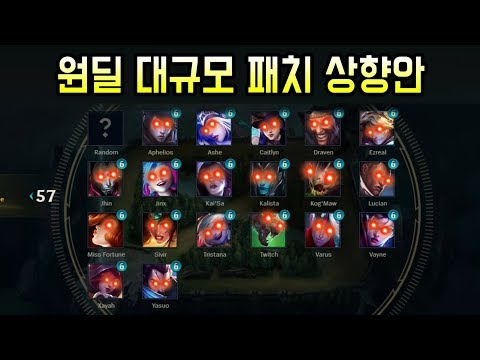

롤에서 원딜은 무엇인가? 원딜은 협곡내 가장 약하면서도 가장 쎈 것이다. 초반은 상체고 후반은 하체라는 말이있다. 그만큼 원딜은 후반에 빛을 바란다. "재밌다" 라는 것엔 늘 반환값이 따른다 원딜은 그에 대한 반환값이 바로 난이도라고 한다. 이제부터 그 원딜이 왜 어려운지 왜 쎈지 원딜에 있어서 가장 중요한 것은 무엇인지를 알아보자
롤에서는 다섯 가지의 라인이 있다 위에서 아래로 탑,미드,정글,바텀,서폿 여기서 바텀이 원딜이다 원딜의 역활은 아주 간단하다 팀에서 가장 많은 딜을 넣는 포지션 이다. 그러기 때문에 그에대한 어드벤티지로 몸이 아주 약하다 마치 암살자가 몸이 약한 것 처럼 하지만 암살자도 마냥 몸이 약하진않다 바로 "기동성"을 가지고 있다. 원딜도 마찬가지다. 이름에 나와있는 것처럼 원딜=원거리 딜러 원딜의 무기는 사거리이다 메이지도 사거리를 가지고있지만 주 딜이 평타인 원딜은 메이지 보다 사거리에대한 중요성이 더 높다고 할 수 있다.